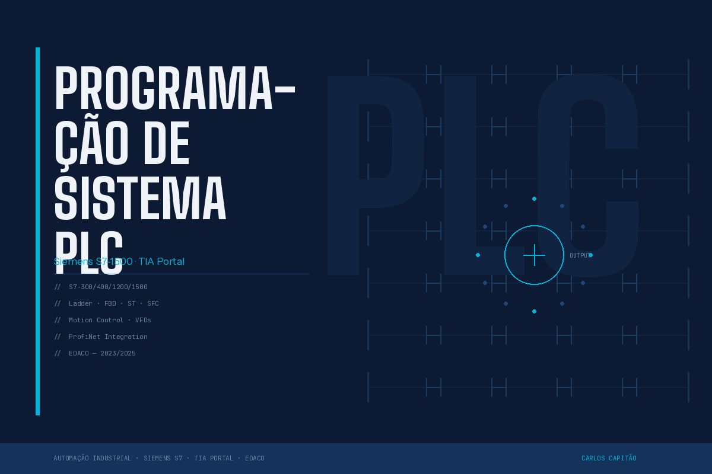
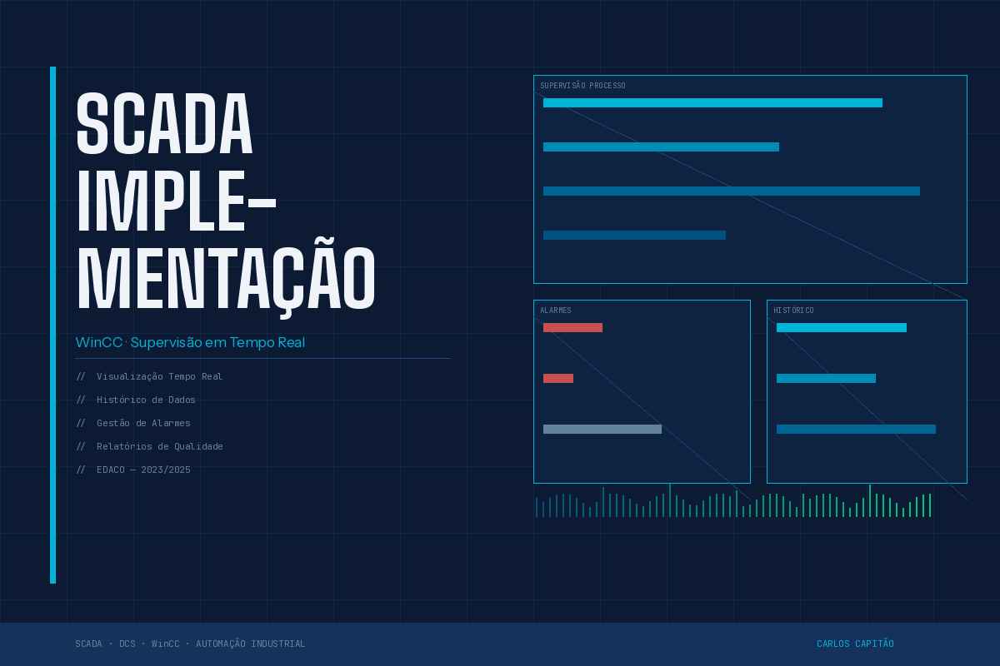
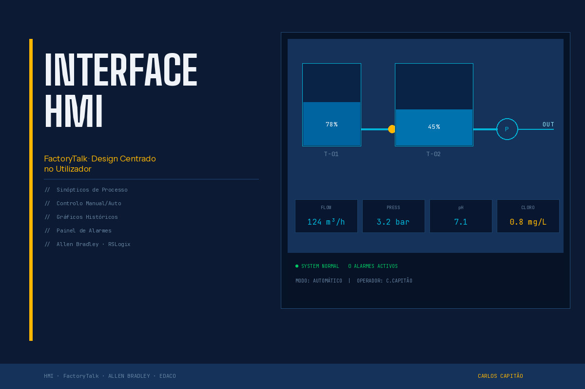
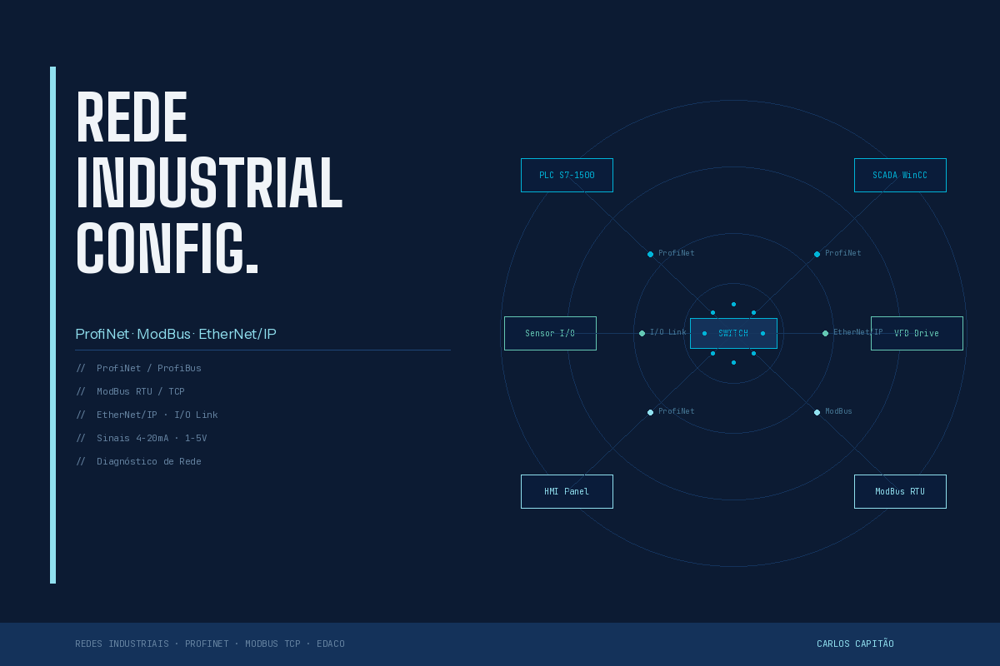

PortfolioPortfólio
A selection of industrial automation projects developed during my time at EDACO.Uma seleção de projetos de automação industrial desenvolvidos durante o meu período na EDACO.
- AllTodos
- PLC
- SCADA
- NetworksRedes
- AcademicAcadémico

{kind=link}
PLC System ProgrammingProgramação de Sistema PLC
Siemens S7-1500 — EDACO
Programming and commissioning of Siemens S7-1500 PLC in TIA Portal for industrial process control. Includes Ladder and FBD logic, VFD parameterisation, and ProfiNet network integration. Programação e comissionamento de PLC Siemens S7-1500 em TIA Portal para controlo de processo industrial. Inclui lógica Ladder e FBD, parametrização de VFDs e integração com rede ProfiNet.

{kind=link}
SCADA ImplementationImplementação SCADA
WinCC — EDACO
SCADA system implementation in WinCC for real-time supervision and monitoring of industrial processes. Configuration of alarms, data historian, and operator dashboards. Implementação de sistema SCADA em WinCC para supervisão e monitorização em tempo real de processo industrial. Configuração de alarmes, histórico de dados e dashboards de operação.

{kind=link}
HMI Interface DevelopmentDesenvolvimento de Interface HMI
FactoryTalk — EDACO
HMI interface development in FactoryTalk View for Allen Bradley systems. Design of operator screens with process synoptics, motor control, and sensor status visualisation. Desenvolvimento de interfaces HMI em FactoryTalk View para Allen Bradley. Criação de ecrãs de operação com sinópticos de processo, controlo de motores e visualização de estado de sensores.

{kind=link}
Industrial Network ConfigurationConfiguração de Rede Industrial
ProfiNet / ModBus — EDACO
Configuration and diagnostics of ProfiNet and ModBus TCP/RTU industrial networks in a production environment. Integration of PLCs, drives, sensors and SCADA systems in a unified industrial network architecture. Configuração e diagnóstico de redes industriais ProfiNet e ModBus TCP/RTU em ambiente de produção. Integração de PLCs, variadores, sensores e sistemas SCADA numa arquitetura de rede industrial unificada.

Water Treatment Plant Automation (WTP) Sistema de Tratamento de Água (ETA)
PLC · SCADA · HMI · ProfiNet — Academic Project 2025CLP · SCADA · HMI · ProfiNet — Projeto Académico 2025
Full industrial automation of a water treatment plant: Siemens S7 PLC, WinCC SCADA, HMI, ProfiNet network and safety interlocks. Automação industrial completa de uma estação de tratamento de água: CLP Siemens S7, SCADA WinCC, HMI, rede ProfiNet e intertravamentos de segurança.